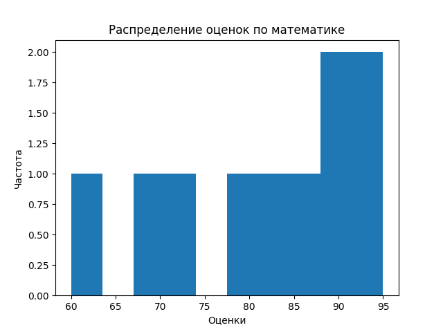
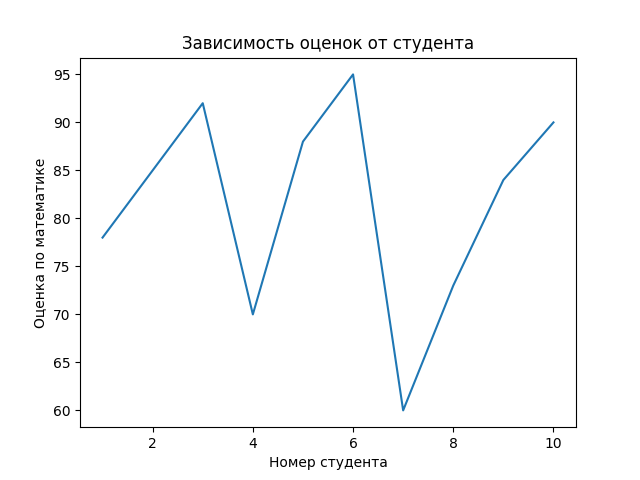

Лабораторная работа 2: Основы NumPy: массивы и векторные операции¶
Цель работы¶
Изучить основные возможности библиотеки NumPy для численных вычислений и анализа данных: создание массивов, векторные и матричные операции, статистический анализ и визуализацию.
Задание¶
- Реализовать функции для создания и обработки массивов
- Выполнить векторные и матричные операции
- Провести статистический анализ данных
- Визуализировать результаты
- Обеспечить соответствие кода стандартам PEP-8, наличие аннотаций типов и документации
Реализация¶
Основные функции¶
Создание и обработка массивов¶
def create_vector() -> np.ndarray:
"""Создать массив от 0 до 9"""
return np.arange(10)
def create_matrix() -> np.ndarray:
"""Создать матрицу 5x5 со случайными числами [0,1]"""
return np.random.rand(5, 5)
def reshape_vector(vec: np.ndarray) -> np.ndarray:
"""Преобразовать (10,) -> (2,5)"""
return vec.reshape(2, 5)
def transpose_matrix(mat: np.ndarray) -> np.ndarray:
"""Транспонирование матрицы"""
return np.transpose(mat)
Нюанс: vector_add требует одинаковой формы массивов, иначе ValueError¶
def vector_add(a: np.ndarray, b: np.ndarray) -> np.ndarray:
"""Сложение векторов одинаковой длины"""
return a + b
def scalar_multiply(vec: np.ndarray, scalar: Union[float, int]) -> np.ndarray:
"""Умножение вектора на число"""
return vec * scalar
def elementwise_multiply(a: np.ndarray, b: np.ndarray) -> np.ndarray:
"""Поэлементное умножение"""
return a * b
def dot_product(a: np.ndarray, b: np.ndarray) -> float:
"""Скалярное произведение"""
return float(np.dot(a, b)) # Явное приведение к float
Нюанс: для существования обратной матрицы важно, чтобы исходня матрица была невырожденной¶
def matrix_multiply(a: np.ndarray, b: np.ndarray) -> np.ndarray:
"""Умножение матриц"""
return a @ b
def matrix_determinant(a: np.ndarray) -> float:
"""Определитель матрицы"""
return float(np.linalg.det(a))
def matrix_inverse(a: np.ndarray) -> np.ndarray:
"""Обратная матрица"""
return np.linalg.inv(a)
def solve_linear_system(a: np.ndarray, b: np.ndarray) -> np.ndarray:
"""Решить систему Ax = b"""
return np.linalg.solve(a, b)
def load_dataset(path: str = "data/students_scores.csv") -> np.ndarray:
"""Загрузить CSV и вернуть NumPy массив"""
return pd.read_csv(path).to_numpy()
# Баллы по математике
results: np.ndarray = load_dataset()
math_res: List[float] = []
for i in range(len(results)):
math_res.append(float(results[i][0])) # Явное приведение к float
def statistical_analysis(data: np.ndarray) -> Dict[str, float]:
"""Статистический анализ данных"""
return {
"mean": float(np.mean(data)),
"median": float(np.median(data)),
"std": float(np.std(data)),
"min": float(np.min(data)),
"max": float(np.max(data)),
"25%": float(np.percentile(data, 25)),
"75%": float(np.percentile(data, 75))
}
def normalize_data(data: np.ndarray) -> np.ndarray:
"""Min-Max нормализация"""
min_val: float = float(np.min(data))
max_val: float = float(np.max(data))
return (data - min_val) / (max_val - min_val)
def plot_histogram(data: np.ndarray) -> None:
"""Построить гистограмму распределения оценок по математике"""
plt.hist(data)
plt.title("Распределение оценок по математике")
plt.xlabel("Оценки")
plt.ylabel("Частота")
plt.savefig("plots/histogram.png")
plt.close()
plot_histogram(math_res)
def plot_heatmap(matrix: np.ndarray) -> None:
"""Построить тепловую карту корреляции предметов"""
fig, ax = plt.subplots(figsize=(9, 7))
columns: List[str] = ['math', 'physics', 'informatics']
rows: List[int] = [1, 2, 3, 4, 5, 6, 7, 8, 9, 10]
sns.heatmap(matrix, annot=True, xticklabels=columns, yticklabels=rows, ax=ax)
ax.set_xlabel("Предметы")
ax.set_ylabel("Студент")
plt.title("Корреляция предметов")
plt.tight_layout()
plt.savefig("plots/heatmap.png")
plt.close()
plot_heatmap(load_dataset())
def plot_line(x: np.ndarray, y: np.ndarray) -> None:
"""Построить график зависимости: студент -> оценка по математике"""
plt.plot(x, y)
plt.title("Зависимость оценок от студента")
plt.xlabel("Номер студента")
plt.ylabel("Оценка по математике")
plt.savefig("plots/line.png")
plt.close()
plot_line(np.array([1,2,3,4,5,6,7,8,9,10]),math_res)
Графики¶
Тепловая карта корреляции предметов¶

Гистограмма распределения оценок по математике¶

График зависимости: студент -> оценка по математике¶

Тесты¶
import os
import numpy as np
import pandas as pd
import matplotlib.pyplot as plt
import matplotlib
matplotlib.use('Agg')
import seaborn as sns
from main import *
def test_create_vector():
v = create_vector()
assert isinstance(v, np.ndarray)
assert v.shape == (10,)
assert np.array_equal(v, np.arange(10))
def test_create_matrix():
m = create_matrix()
assert isinstance(m, np.ndarray)
assert m.shape == (5, 5)
assert np.all((m >= 0) & (m < 1))
def test_reshape_vector():
v = np.arange(10)
reshaped = reshape_vector(v)
assert reshaped.shape == (2, 5)
assert reshaped[0, 0] == 0
assert reshaped[1, 4] == 9
def test_vector_add():
assert np.array_equal(
vector_add(np.array([1,2,3]), np.array([4,5,6])),
np.array([5,7,9])
)
assert np.array_equal(
vector_add(np.array([0,1]), np.array([1,1])),
np.array([1,2])
)
def test_scalar_multiply():
assert np.array_equal(
scalar_multiply(np.array([1,2,3]), 2),
np.array([2,4,6])
)
def test_elementwise_multiply():
assert np.array_equal(
elementwise_multiply(np.array([1,2,3]), np.array([4,5,6])),
np.array([4,10,18])
)
def test_dot_product():
assert dot_product(np.array([1,2,3]), np.array([4,5,6])) == 32
assert dot_product(np.array([2,0]), np.array([3,5])) == 6
def test_matrix_multiply():
A = np.array([[1,2],[3,4]])
B = np.array([[2,0],[1,2]])
assert np.array_equal(matrix_multiply(A,B), A @ B)
def test_matrix_determinant():
A = np.array([[1,2],[3,4]])
assert round(matrix_determinant(A),5) == -2.0
def test_matrix_inverse():
A = np.array([[1,2],[3,4]])
invA = matrix_inverse(A)
assert np.allclose(A @ invA, np.eye(2))
def test_solve_linear_system():
A = np.array([[2,1],[1,3]])
b = np.array([1,2])
x = solve_linear_system(A,b)
assert np.allclose(A @ x, b)
def test_load_dataset():
test_data = "math,physics,informatics\n78,81,90\n85,89,88"
with open("test_data.csv", "w") as f:
f.write(test_data)
try:
data = load_dataset("test_data.csv")
assert data.shape == (2, 3)
assert np.array_equal(data[0], [78,81,90])
finally:
os.remove("test_data.csv")
def test_statistical_analysis():
data = np.array([10,20,30])
result = statistical_analysis(data)
assert result["mean"] == 20
assert result["min"] == 10
assert result["max"] == 30
def test_normalization():
data = np.array([0,5,10])
norm = normalize_data(data)
assert np.allclose(norm, np.array([0,0.5,1]))
def test_plot_histogram():
data = np.array([1,2,3,4,5])
plot_histogram(data)
def test_plot_heatmap():
matrix = np.array([
[1.0, 0.8, 0.3],
[0.8, 1.0, 0.5],
[0.3, 0.5, 1.0]
])
plot_heatmap(matrix)
assert os.path.exists("plots/heatmap.png"), "Файл heatmap.png не создан"
def test_plot_line():
x = np.array([1,2,3])
y = np.array([4,5,6])
plot_line(x, y)
if __name__ == "__main__":
print("Запуск через python -m pytest test.py -v для проверки лабораторной работы.")
Нюанс с тестами: При запуске тестов без GUI: _tkinter.TclError: Can't find a usable tk.tcl¶
Решение: Добавить в начало:¶
import matplotlib
matplotlib.use('Agg')